АМЕРИКАНА
Эндрю Уайетт и др.
Скончался Эндрю Уайетт. Странно в связи с этим слышать «ушла эпоха» — его-то эпоха ушла десятилетия назад. Другое дело, что это была одна из тех редких эпох, которых хоть сколько-нибудь жаль.
Это, кстати, из моего детства кадр
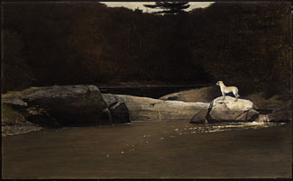
Много он хорошего написал, но в общем остался художником одной вещи.
Мир Кристины
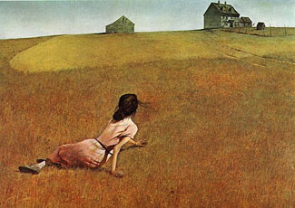
Тот случай, когда на картине происходит много больше, чем на ней собственно нарисовано. Мне сильно испортил впечатление от нее известный факт о самой Кристине, который вы легко найдете в гугле, если уж очень хочется, и который сразу сокращает сценарий до одного абзаца.
Кристина на Солярисе, вот тебе и регионализм
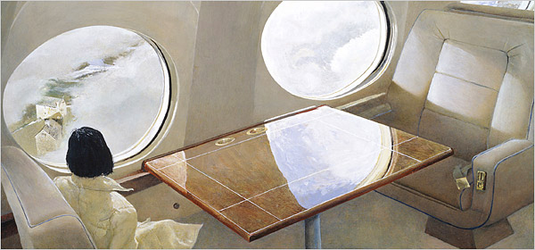
Трудно рассуждать о том, влияет ли и как иллюстрация на жизнь. По хорошему должна бы. И опосредованно — да, влияет. Через кинематограф. Из одного «Мира Кристины» вышел целый Теренс Малик, а из него — полки кинематографистов разной степени независимости.
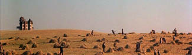
Или вот недавняя «Страна Приливов» Терри Гильяма, кинофильм, в котором я не все понимаю, поскольку, как мне объяснили, никогда не был маленькой девочкой (Гильям, надо понимать, был), но точно достойный внимания, и, что интересно, примерно противоположный Малику по ощущениям.
Не думал, что получится приплести сюда гильямовские заставки для Шоу Монти Пайтона, в свою очередь, вдохновившие не один полк иллюстраторов, но вот вам пожалуйста:
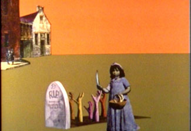
Отвлекся. К вопросу об искусстве нарисовать больше, чем нарисовано.
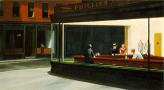
Эдвард Хоппер — местами прямо американский Вермеер.
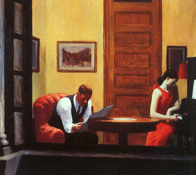
Вермеер, впрочем, медитирует на солнечный зайчик, а у Хоппера такой же бархатистый, невыцветший быт насквозь пропитан чувством опасности. Пронзительная тишина за секунду до семейного скандала, или же бурного секса на офисном столе.
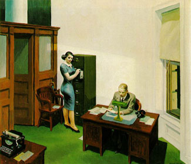
Любимый источник цитат у режиссеров, снимающих нуар в разных его ипостасях, от Хичкока до Сэма Мендеса, например:
Кадр из фильма «Проклятый Путь»
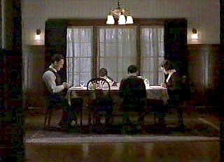
Вообще надо сказать, что для Америки первой половины XX-го века иллюстратор — а и Уайет, и Хоппер именно иллюстраторы, в самом козырном смысле слова, как Репин, скажем. В том числе благодаря этим людям, чьи работы на журнальной обложке чувствуют себя ничуть не хуже, чем в раме на стене музея, иллюстрацией сейчас можно считать любое изображение, способное самостоятельно рассказать историю. Иллюстрации не обязательно сопровождать текст, но она и не может позволить себе ограничиваться декоративной функцией.
Так вот, для Америки первой половины XX-го века иллюстратор был больше, чем иллюстратором. Так, Джордж Дана Гибсон (упоминал его) высоко ценим феминистским движением за создание незабываемого образа неглупой и независимой женщины — при том, что по большому счету рисовал такой прото-пин-ап (а по сути это пин-ап и есть, «булавка-вверх», картинка, которую прикалывают над казарменной койкой).
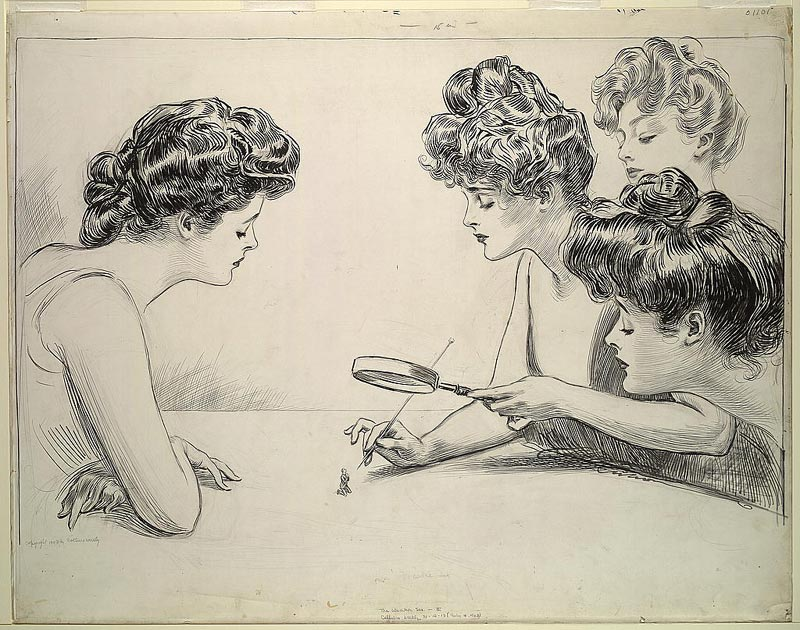
Эл Си Лейендекер наоборот, сильно подкрутил представления об идеальном мужчине
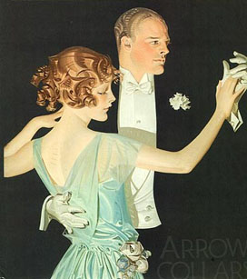
хотя у него есть вещи поинтереснее:
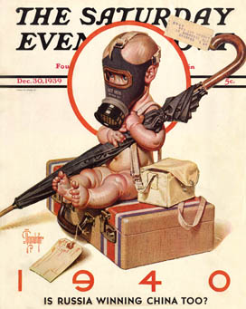
Норман Рокуэлл, говорят, сильно улучшил самоощущение Америки после войны. Показал ей, какая она хорошенькая. Если бедность — то в милых разноцветных заплатках, если алкоголик — то колоритный красноносый старичок, если гангстеры — то дошкольного возраста. Рокуэлл, конечно, вдохновил индустрию кича на новые свершения — зато его характеры до сих пор всплывают в мультфильмах и детских книжках.
Да что там, прекрасный художник. Что пластика, что «пятна», что детали — все выверено, все нескучно, очень есть чему поучиться.
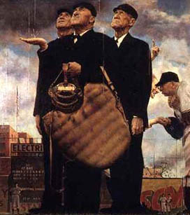
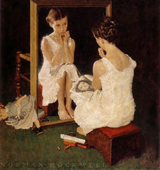
Все это, конечно, довольно разные художники, и любой искусствовед плюнет мне в лицо, за то, что свалил их в одну кучу. Но есть такое слово — Americana. Это одновременно Джонни Кеш, Брюс Спрингстин, Том Уейтс и, не знаю, Violent Femmes. Широкая и да, загадочная американская душа. Пикап едет по дороге между кактусов — какой американский не любит быстрой езды. Это не школа, но это национальность, и завидовать нужно этому, а не (не только) уровню технического мастерства. Да, никто не любит Джорджа Даблъю Буша, но есть же Джордж Рой Хилл, в конце концов (тут напрашивается глубокомысленное про кусты и холм, но воздержусь, поскольку и так отвлекся).
Чтобы уж разобраться со старыми американскими живописцами-иллюстраторами: Грант Вуд — тоже художник одной всем известной картины,
но у этого, в отличие от Уайетта, есть более крутая:
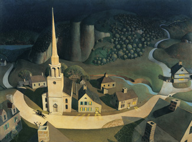
и еще куча вот таких жутковато-кукольных айовских пейзажей — населенных, понятно, пожилым очкариком с вилами.
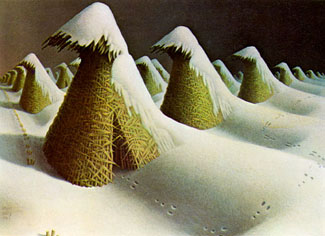
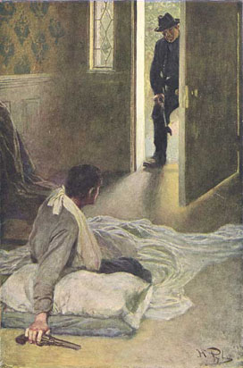
Ну, и все остальные. Ушла эпоха, и бог с ней. Пользуясь случаем, хочу пожелать долгих лет Дэвиду Хокни, который взял из нее все, что нужно и пошел дальше своей дорогой. Про него отдельно как-нибудь.
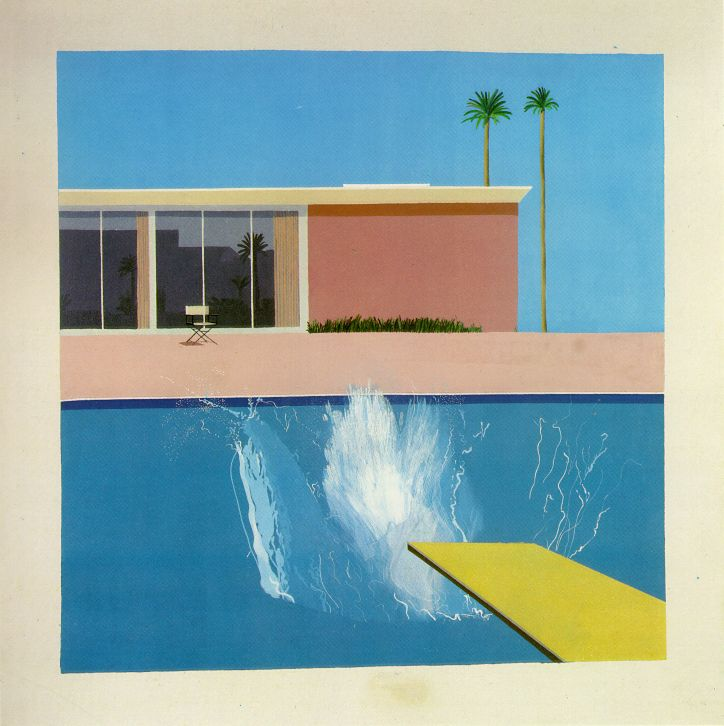